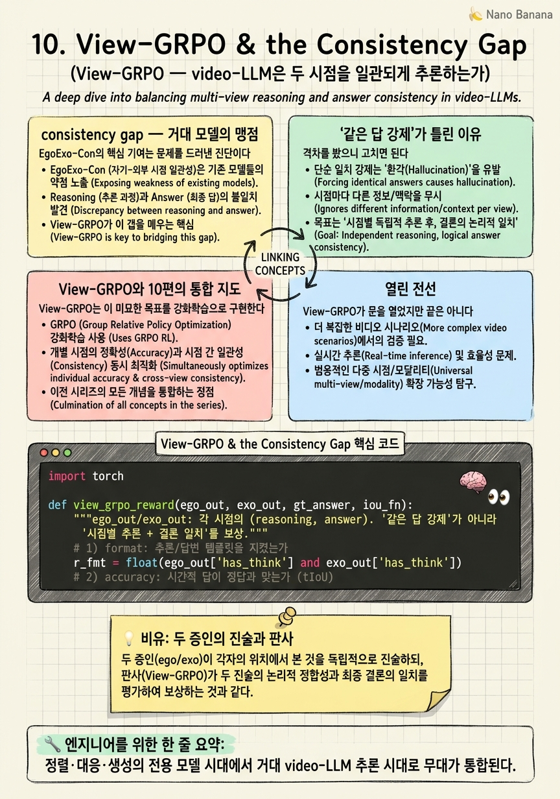

View-GRPO & the Consistency Gap
7B video-LLM이 1인칭 영상에서는 56% 맞히던 질문을, 같은 사건의 3인칭 영상과 함께 주면 33%로 추락한다. 거대 모델은 시점이 바뀌면 사고를 멈추는가?

🎯 학습 목표
- 전용 모델 시대에서 video-LLM 시대로의 통합을 이해한다
- cross-view consistency gap이라는 진단의 의미를 안다
- '같은 답 강제'가 왜 틀린 목표인지 설명한다
- View-GRPO의 시점별 추론+일치 결론 보상 구조를 안다
- 10편 전체 흐름을 하나의 지도로 통합한다
9장까지의 여정은 모두 전용 모델의 이야기였다 — 정렬 인코더, 대응 세그멘터, 생성 확산기. 그러나 2025~2026년 현대 비디오 시스템의 주역은 video-LLM(Qwen2.5-VL, TimeChat 등)이다. 그렇다면 근본 질문 — 이 거대 모델들은 ego와 exo를 일관되게 추론하는가?
EgoExo-Con(2025) 라인의 진단은 충격적이다. 같은 사건을 묻되 시점만 바꾸면, video-LLM의 cross-view 시간 추론 정확도가 단일 시점의 절반 언저리로 붕괴한다. Qwen2.5-VL 7B는 단일 시점 ~54–56%에서 cross-view 33.0%로, TimeChat은 ~61–62%에서 42.1%로 떨어진다. 모델이 강건한 시간 추론이 아니라 시점별 편향에 기대고 있다는 증거다.
이 진단에서 나온 방법이 View-GRPO다. 순진한 해법은 "두 시점에 같은 답을 강제"하는 것이지만, 이는 틀렸다 — 시점이 다르면 보이는 단서가 다르므로 추론 경로도 달라야 한다. View-GRPO는 GRPO(Group Relative Policy Optimization) 기반 강화학습으로, 시점별로 고유한 추론 흔적을 남기되 결론은 일치하도록 유도한다. 형식·정확도·추론 보상을 결합해 "다른 눈으로 보되 같은 진실에 도달"하게 만든다. 10장은 이 통합과 함께 10편 전체를 하나의 지도로 묶는다.
핵심 내용
consistency gap — 거대 모델의 맹점
EgoExo-Con의 핵심 기여는 문제를 드러낸 진단이다. 벤치마크를 만들어, 같은 사건에 대한 시간적 질문(언제 무엇이 일어났나)을 ego와 exo 각각으로 물었다. 이상적이라면 같은 사건이니 답이 일관되어야 한다.
결과는 그렇지 않았다. cross-view 일관성 점수가 단일 시점 성능의 절반 안팎에 그쳤다.
| 모델 | 단일 시점 | cross-view 일관 |
|---|---|---|
| Qwen2.5-VL 7B | ~54–56% | 33.0% |
| TimeChat | ~61–62% | 42.1% |
이 격차가 폭로하는 것은 뼈아프다. 모델이 사건의 시간 구조를 진짜로 추론했다면 시점이 바뀌어도 답이 유지되어야 한다. 절반으로 무너진다는 것은, 모델이 각 시점의 표면적 편향(ego에는 손, exo에는 전신 같은)에 답을 걸어놨다는 뜻이다. 1~9장이 인코더·대응·생성에서 시점 불변을 추구했는데, 정작 추론 계층에서는 시점 불변이 무너져 있었던 것이다.
이것이 왜 통합의 자리인가. 앞선 모든 연구가 '표현·객체·픽셀'의 일관성을 다뤘다면, video-LLM 시대의 새 전선은 추론(reasoning)의 일관성이다. 그리고 그것이 아직 심각하게 부족하다는 진단이 출발점이다.

'같은 답 강제'가 틀린 이유
격차를 봤으니 고치면 된다. 순진한 처방은 "두 시점에 동일한 출력을 내도록 강제"하는 것이다. 손실로 두 시점 답을 똑같이 맞추면 될 것 같다.
이것은 틀렸다. 핵심은 시점이 다르면 관측 가능한 단서가 다르다는 것이다. ego에서는 손과 조작 객체가 또렷하지만 전체 공간 배치는 안 보인다. exo는 반대다. 같은 사건이라도 "무엇을 근거로" 답에 이르는 경로는 시점마다 정당하게 다르다.
두 시점에 똑같은 추론을 강제하면, 한 시점에서는 안 보이는 단서를 억지로 쓰게 되거나, 각 시점의 고유 정보를 버리게 된다. 일관성을 출력 동일성으로 오해하면 오히려 추론을 망친다.
올바른 목표는 미묘하다 — 추론 경로는 시점마다 고유하되, 도달하는 결론은 일치해야 한다. "다른 창문으로 같은 방을 보되, 방에 대한 결론은 같다." 이 구분이 View-GRPO 설계의 핵심 통찰이고, 8장 CCMP가 '출력을 똑같이'가 아니라 '왕복이 닫히게'로 일관성을 정의했던 것과 같은 성숙함이다.
View-GRPO와 10편의 통합 지도
View-GRPO는 이 미묘한 목표를 강화학습으로 구현한다. GRPO(Group Relative Policy Optimization) 위에서, 모델이 <think> 추론 흔적과 <answer> 결론을 생성하게 하고 세 보상을 건다.
-
형식(format) 보상: 정해진 추론·답변 템플릿을 따르는가.
-
정확도(accuracy) 보상: 시간적 답(tIoU 등)이 맞는가.
-
추론(reasoning) 정합 보상: 시점별 고유 추론을 하되 결론이 cross-view로 일치하는가.
RL이라 미분 불가능한 "결론 일치" 같은 목표를 직접 최적화할 수 있다. 그 결과 모델은 각 시점의 고유 단서로 시점 특화 추론을 전개하면서도, 서로 다른 두 경로가 같은 결론으로 수렴하도록 학습된다. '같은 답 강제'의 함정을 피하면서 consistency gap을 좁힌다.
이제 10편을 하나의 지도로 묶자.
| 단계 | 일관성의 층위 | 대표 논문 |
|---|---|---|
| ① 표현 정렬 | feature가 시점 불변 | Actor-Observer · Ego-Exo · AE2 · BYOV · Rosetta Stone |
| ② 객체 대응 | 픽셀·객체가 시점 간 대응 | ObjectRelator · O-MaMa · CCMP |
| ③ 시점 생성 | 한 시점에서 다른 시점을 재구성 | Exo2Ego |
| ④ 추론 통합 | 추론이 시점 간 일관 | View-GRPO |
관통하는 서사는 "일관성의 정의가 점점 깊어진 역사"다. feature 유사도 → 시간 정렬 → 픽셀 대응 → 사실적 생성 → 추론 일치. 각 단계는 앞 단계의 한계(더 얕은 일관성)를 넘으려는 시도였다. 그리고 매 전환의 동력은 가정의 완화(paired→unpaired)와 일관성 요구의 심화(표현→객체→픽셀→추론)였다.
마지막 통찰 하나. 8장 CCMP의 '왕복 일관성'과 10장 View-GRPO의 '결론 일치'는 같은 성숙함을 공유한다 — 일관성은 '똑같음'이 아니라 '되돌아옴·수렴함'이라는 것. 두 시점은 다르게 보여야 정상이고, 그 다름에도 불구하고 같은 진실로 모이는 것이 진짜 일관성이다. 이것이 ego-exo 연구가 8년에 걸쳐 도달한 가장 깊은 정의다.

열린 전선
View-GRPO가 문을 열었지만 끝은 아니다. EgoExo-Con 주의사항: 이 라인은 벤치마크·데이터 기여가 크지만(이 코스는 데이터 논문을 제외했으므로 View-GRPO 방법만 다뤘다), 방법으로서의 View-GRPO는 아직 초기다.
남은 질문들이 분명하다. 첫째, 추론 일관성을 표현·대응 계층과 어떻게 연결할 것인가 — 좋은 cross-view 인코더(1~5장)나 대응(6~8장)이 추론 일관성을 직접 끌어올릴까? 둘째, RL 보상 설계가 특정 벤치마크에 과적합되지 않는가. 셋째, 생성(9장)과 추론(10장)을 합쳐, 모델이 없는 시점을 상상하며 추론하는 통합 world model로 갈 수 있는가.
10편의 여정이 남긴 가장 큰 그림은 이것이다. ego-exo 일관성은 하나의 기법이 아니라 하나의 렌즈다 — "같은 세계를 다른 시점으로 볼 때, 무엇이 보존되어야 하는가"라는 질문. 표현학습, 대응, 생성, 추론이 모두 이 한 질문의 서로 다른 깊이의 답이었다. 그리고 이 질문은 로보틱스(3인칭 시연→1인칭 실행), AR(두 시점 겹치기), 구현 지능(embodied AI) 전반의 근본 문제로 계속 확장된다.
💡 비유로 이해하기
같은 사건을 두 증인이 다른 위치에서 봤다. 정문 경비(exo)와 사건 당사자(ego)다. 서투른 판사는 "두 진술이 글자 그대로 똑같아야 진실"이라 여긴다(같은 답 강제). 하지만 이건 틀렸다 — 경비는 전체 동선을 봤고 당사자는 손에 든 것을 봤다. 정당하게 다른 것을 봤다.
현명한 판사(View-GRPO)는 다르게 한다. 각 증인이 자기가 본 것으로 자기 추론을 펼치게 하되(시점별 추론), 두 추론이 같은 결론으로 수렴하는지를 본다(결론 일치). 진술의 표면이 아니라 도달하는 진실이 같아야 한다. 강화학습은 이 '수렴하는가'라는 미분 불가능한 판단을 직접 보상으로 최적화하는 장치다.
충격은 진단에 있었다. 최신 거대 모델(video-LLM)조차, 시점이 바뀌면 같은 사건에 대한 판단을 절반이나 뒤집었다 — 사건을 이해한 게 아니라 각 시점의 겉모습에 답을 걸어놨던 것이다. 8년의 ego-exo 연구가 인코더·대응·생성에서 시점 불변을 쌓아왔는데, 정작 추론에서 그것이 무너져 있었다. 그래서 마지막 전선은 다르게 보되 같은 진실에 이르는 추론이다.
💻 코드 예시
View-GRPO의 핵심 — 시점별 고유 추론은 허용하되 결론 일치에 보상 — 을 개념 골격으로 보자.
import torch
def view_grpo_reward(ego_out, exo_out, gt_answer, iou_fn):
"""ego_out/exo_out: 각 시점의 (reasoning, answer). '같은 답 강제'가 아니라
'시점별 추론 + 결론 일치'를 보상."""
# 1) format: 추론/답변 템플릿을 지켰는가
r_fmt = float(ego_out['has_think'] and exo_out['has_think'])
# 2) accuracy: 시간적 답이 정답과 맞는가 (tIoU)
r_acc = 0.5*iou_fn(ego_out['answer'], gt_answer) + 0.5*iou_fn(exo_out['answer'], gt_answer)
# 3) consistency: 추론 '경로'는 달라도 '결론'은 일치하는가 (출력 동일성 아님!)
r_con = float(iou_fn(ego_out['answer'], exo_out['answer']) > 0.7)
return r_fmt + r_acc + r_con # GRPO가 이 결합 보상을 직접 최적화
# 순진한 오답: loss = ||ego_out - exo_out|| ← 시점별 고유 단서를 파괴한다핵심은 세 보상의 결합과, 마지막 주석의 오답 대비다. 순진한 해법(||ego_out - exo_out||)은 두 시점 출력을 똑같이 강제해 각 시점의 고유 단서를 파괴한다. View-GRPO는 대신 r_con을 결론(answer) 일치에만 걸고 추론 경로(think)의 차이는 허용한다 — '다르게 보되 같은 결론'. RL(GRPO)이라 'IoU>0.7이면 일치'처럼 미분 불가능한 목표를 직접 보상으로 최적화한다. 이는 8장 CCMP가 '출력 동일'이 아니라 '왕복이 닫힘'으로 일관성을 정의한 것과 같은 성숙함이다.
🏭 현업에서의 평가
✅ 시니어가 보는 것
- consistency gap 진단의 의미(표면 편향 의존)를 해석하는가
- '같은 답 강제'가 왜 틀렸는지, 올바른 목표가 무엇인지 구분하는가
- RL로 미분 불가능한 일관성 목표를 최적화하는 이유를 아는가
⚠️ 레드 플래그
- cross-view 일관성을 두 시점 출력 동일성으로 정의
- 진단(벤치마크)과 방법(View-GRPO)을 뭉뚱그림
- 추론 일관성을 인코더·대응 계층과 무관하게 봄
🎤 예상 인터뷰 질문 (클릭하면 모범답안)
video-LLM의 cross-view consistency gap이 폭로하는 것은?
단일 시점 대비 cross-view 정확도가 절반 언저리로 떨어진다는 것은, 모델이 사건의 시간 구조를 진짜 추론한 게 아니라 각 시점의 표면적 편향(ego의 손, exo의 전신 등)에 답을 걸어놨다는 증거다. 1~9장이 인코더·대응·생성에서 시점 불변을 쌓았지만 추론 계층에선 그것이 무너져 있었다.
두 시점에 '같은 답을 강제'하면 왜 안 되나? 올바른 목표는?
시점이 다르면 관측 가능한 단서가 다르다 — ego는 손, exo는 공간 배치. 같은 추론을 강제하면 안 보이는 단서를 억지로 쓰거나 고유 정보를 버린다. 올바른 목표는 추론 경로는 시점별로 고유하되 결론은 일치. View-GRPO는 결론 일치에만 보상을 걸고 추론 차이는 허용한다.
왜 이 목표에 지도학습 손실이 아니라 RL(GRPO)을 쓰나?
'두 시점 결론이 일치하는가'(예: tIoU>0.7)나 '추론 흔적이 형식을 지키는가' 같은 목표는 미분 불가능하다. RL은 이런 이산·비미분 보상을 직접 최적화할 수 있어, 형식·정확도·결론일치를 결합 보상으로 걸고 시점 특화 추론을 학습시킨다.
✨ 핵심 요약
전용 모델→video-LLM
정렬·대응·생성의 전용 모델 시대에서 거대 video-LLM 추론 시대로 무대가 통합된다.
consistency gap
video-LLM의 cross-view 추론이 단일 시점의 절반 — 표면 편향에 답을 걸어놓았다는 폭로.
출력 동일성은 오답
시점이 다르면 단서가 다르다 — 같은 답 강제는 고유 정보를 파괴한다.
경로는 달라도 결론 일치
시점별 고유 추론을 허용하되 결론이 수렴하도록 — 일관성의 성숙한 정의.
View-GRPO(RL)
형식·정확도·결론일치 보상으로 미분 불가능한 일관성 목표를 직접 최적화한다.
일관성 심화의 역사
feature→시간→픽셀→생성→추론 — 일관성의 정의가 점점 깊어진 8년의 궤적.
열린 world model
생성(상상)과 추론(일치)을 합친 통합 embodied world model이 다음 전선이다.
- (EgoExo-Con) (2025). EgoExo-Con / View-GRPO: Cross-view Temporal Consistency for Video-LLMs. arXiv 2025. arXiv:2510.26113